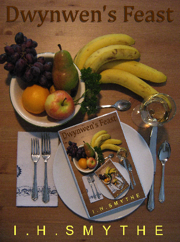

Dwynwen's FeastHome | Gallery | Poetry For Animals | Stories For Animals |
Dwynwen's Feast | Plays | Videos | Short works | Store |
|

|
Oliver Black is a restaurant critic and exuberantly moral family man. Father to an eight-year-old vegan warrior princess with her own animal rescue service and three hulking teenage boys whose purpose in life is to convert bananas into testosterone, Oliver has his hands full. Oliver’s wife, Lucy, is an ambitious artist with a secret, although given that Oliver corresponds regularly with a blackmailer while his brother constantly runs from the police, it would seem that Lucy is not the only one with a clandestine life. It is Oliver who first introduces us to Rafe Wilde, a music critic and playboy manqué who boasts big secrets and even bigger troubles. When Rafe’s current and former girlfriends both refuse to sleep with him and he is forced to endure Oliver’s relentless criticism of his taste in music and women, Rafe is driven to distraction. But when his irritation turns into hostility and his hostility turns into hatred, Rafe becomes hell-bent on revenge. Dwynwen’s Feast merrily transports souls hungry for humour on a full-course satirical romp through music, art, philosophy, religion, cats, critics, beds, and bananas. |